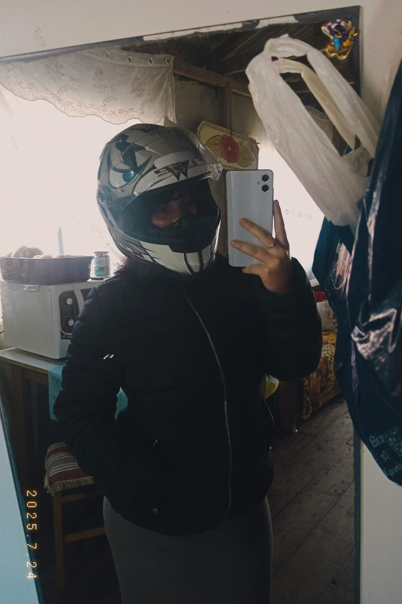

Te conheci minha dama, obrigado por tudo e pela oportunidade de te conhecer, eu vou fazer de tu pra tu meu amor, custe o que custar.

Para cada vez que olho nos seus olhos minha alma sai do meu corpo, tu me ilumina.

De tantos lugares que desejo conhecer, o calor do seu abraço é o principal que desejo.

Acredito que para cada princesa, é necessário um príncipe